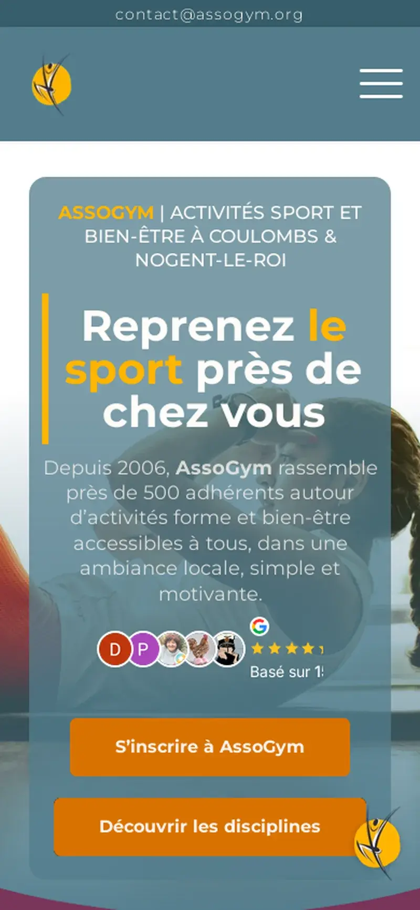

85|85|
86|86|
96|96|
97|97| Assogym
assogym.fr · Score 93.4 · TTI 697 msClub de fitness · Coulombs, France
87|87|
88|88|
89|89|
90|90|
91|91| Le problème
Un club de fitness local invisible sur Google, qui perdait des membres au profit de concurrents mieux référencés dans le même département.
La solution
Écosystème complet : site WordPress sur mesure avec horaires des cours, SEO local ciblant « club de sport + département », optimisation Google Business Profile et framework GEO pour la visibilité ChatGPT.
Résultats
92|92|#1 Google+300 % visibilité+40 % inscriptionsCité par ChatGPT
93|93| « Notre club est maintenant premier dans les recherches Google sur tout le département. Jean a compris exactement ce dont nous avions besoin et a livré un site que nos membres adorent. »94|94|
Assogym, Coulombs
95|95|